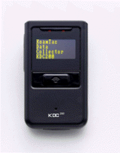
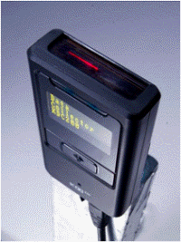
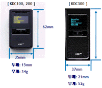
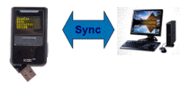
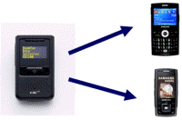
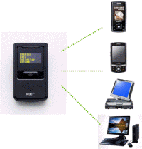
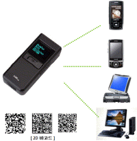
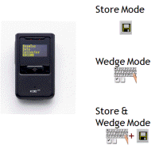
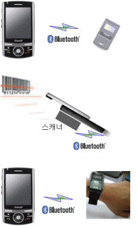

|
|
|
| HOME > Solution > Data Collector |
|
|
|
▶ Data Collector
이동 중에 신속한 데이터 처리가 요구되는, 택배/AS/재고관리/FA 등의 업무를 효율적으로 처리할 수 있도록 고안된 휴대용 유무선 Data Collecting 시스템입니다.
|
|
▶ Data Collector 특징 및 구성
- 제품개요
- Compact Data Collector
- 선명한 OLED화면
- 다양한 유/무선 통신
- Li_Polymer 충전지 내장
- 내장 메모리 탑재
- 10,000개 이상의 Scan 결과 저장 가능
- 최고 성능의 Laser Scan Engine 탑재
- 제품 종류 : KDC 100, KDC 200, KDC 300(1D/2D Scanner)
|
 |
|  |
- Display & Battery
- OLED(Organic Light Emitting Diodes)화면
- 1" OLED 화면은 실시간으로 스캔한 데이터를 확인 할 수 있음
- OLED 화면의 자체 발광 기능은 어두운 곳에서도 쉽게 스캔한 데이터를 확인 할 수 있음
- 일반 LCD와 달리 화질이 변하지 않고 화면에 잔상이 남지 않음
- Li-Polymer 충전지 내장
- 자체 내장 전원을 사용함(핸드폰이나 PDA 전원 사용 안함)
- 최신의 Li-Polymer 충전지는 기존 Li_ion 충전지 대비 성능 저하가 개선되어, 항상 안정적인 전원 공급이 가능함
- 1회 충전으로 10,000회 이상의 스캔이 가능하며 사용기간 3일, 대기시간 1주일 이상이 가능함
- USB Connector를 이용하여 충전이 가능하며, 언제 어디서나 PC가 있으면 충전이 가능함
|
- 크기, Laser Scan Engine
- 초슬림 사이즈와 무게는 사용자의 편의성을 극대화 해 줍니다.
- Laser Scan Engine
- Laser Scan Engine은 항상 안정적인 스캔 성능을 보장 함
- 빠른 Scan 속도는 모든 1D 바코드는 물론, PDF417까지 스캔이 가능 함
|

|


|
- KDC 100(유선통신)
- 일반 바코드 스캐너
- 스캔 결과를 메모리에 저장 후, USB나 Serial 통신을 통해 PC에 저장 가능
- 핸드폰 혹은 일반 PDA에 연결 하여 사용 가능
- Serial Cable을 PDA나 폰의 Serial Port에 연결 스캔 결과를 실시간 전송 가능.
- USB 또는 Serial
- KDC100의 메모리에 저장된 스캔 결과를 PC에 Sync를 통해 전달.
- Serial
- 핸드폰 또는 PDA에 바코드 스캐너로 연결 가능.
|
- KDC 200(유/무선통신)
- 유/무선 통신을 통해 쉽게 PDA, 핸드폰, Notebook, 데스크탑 PC에 스캔한 결과를 전달 할 수 있다.
- Bluetooth
- v2.0+EDR적용으로 쉽게 패어링을 맺을 수 있고, 데이터 통신 속도가 빨라짐(115K)
- SPP(Serial Port Profile)이 적용 되어, 어떠한 호스트에도 쉽게 연결 가능
- USB
- 싱크를 통해 호스트에 스캔 데이터를 쉽게 전달 가능
- Serial
|
 |
|

|
- KDC 300(1D/2D 유/무선통신)
- 1D/2D Scan
- 2D: AztecCode, AztecRunes, CodablockF, Code, DataMatrix, MaxiCode, MicroPDF, PDF417, QRCode …
- 1D: Codabar, code11, Code32, Code39, Code128, EAN8, EAN13, EANUCC, I2of5, RSS-14, UPCA, UPCE …
- Bluetooth
- v2.0+EDR적용으로 쉽게 패어링을 맺을 수 있고, 데이터 통신 속도가 빨라짐(115K)
- SPP(Serial Port Profile)이 적용 되어, 어떠한 호스트에도 쉽게 연결
- USB
- Sync를 통해 호스트에 스캔 데이터를 쉽게 전달
- Serial
|
- 데이터 처리
- 입력된 바코드 데이터 전송방식에는 세가지 방식이 있으며 데이터 전송시 스캔 타임과 본체 시리얼넘버를 함께 전송함으로써 데이터 활용 극대화
- 256KB의 자체 메모리에 스캔데이터를 저장함, 저장한 데이터는 USB나 Bluetooth를 이용해 일괄 전송
- 실시간으로 USB 또는 Bluetooth를 이용 스캔결과를 전송
- 스캔결과를 실시간으로 Host Device에 전송하고 동시에 자체 메모리 저장함
|
 |
|  |
- 제품특징
- 다양한 사용자 편의성 확보
- 핸드폰과 스캐너를 블루투스로 연결하여 공간과 규격의 제한성을 극복
- 블루투스의 통신 거리는 약 15[Meter]로 충분한 작업 거리 확보
- 작업자 취향에 따라 스캐너를 핸드폰에 부착하는 부착형 지원
- 스캐너를 손목 착용 액세서리를 통해 작업자 편의성 확보
- 우수한 내구성
- 핸드폰과 스캐너가 무선의 블루투스로 연결되어 유선형태에서 발생하는 커넥터 손상 및 휴대하면서 발생하는 케이블의 탈착과 같은 장애가 없음
- 스캐너가 모듈 형태가 아니라 완제품 형태로 충분히 산업 현장에 맞는 내구성을 갖고 있어서 충격 등에도 뛰어난 내구성
|
- 활용분야
- Logistics and Transportation
- Field Service
- FA(Factory Automation)
- Retail
- Others
- 교육 : 학습지 방문교사 등
- 병원 : 회진 및 환자 관리
- 물류창고 : 입출하 및 재고관리
|
|
|
- S/W 기술지원
- Sync Software & Keyboard Emulator
- KT Sync(KDC용 Sync프로그램)는 사용자가 쉽게 스캔한 결과를 PC에 전달 할 수 있게 해 줌
- Sync시 PC의 Time Data를 동기화함으로써 본체 내장 타이머의 신뢰성 보장
- SDK지원
- 고객이 직접 Application을 개발 하고자 할 경우, KDC의 SDK를 이용하여 개발 할 수 있도록 지원 함
|
- 제품 사양
| | | | |
| ITEM |
KDC-100 |
KDC-200 |
KDC-300 |
| Processor |
ARM7, 32bits |
ARM9, 32bits |
| Memory(ROM/RAM) |
256KB ROM(512KB확장 가능), 64KB RAM |
256KB ROM(2MB확장 가능) , 64KB RAM |
| Display |
1" OLED |
| Barcode Scan Engine |
VLM4122 |
IT5000(HHP5000) |
| Battery |
170mAh Lithium-Polymer rechargeable |
600mAh, Lithium-Ion rechargeable |
| Keys |
1 scan button, 2 scroll buttons |
| Interface |
USB(Ultra mini USB port)/Serial(Ultra mini USB Port),
Bluetooth v2.0+EDR, Calss2 |
| Charging |
Via USB connector |
| Weight(g) |
34g |
52g |
| Humidity |
5% ~ 90%(non condensing) |
| Drop |
1.2m(6면 2회 총 12회 낙하) |
| Dimension(mm) |
35mm x 62mm x 15mm |
37mm x 83mm x 21mm |
| Temperature
| Operating | -10℃ ~ 50℃ |
| Storage | -20℃ ~ 60℃ |
| 1D, PDF417 |
1D |
1D, PDF417 |
1D, 2D |
| Bluetooth |
- |
O |
O |
| Accessories
| Default | 1 CD(User's Manual, Synchronization software), 1 USB Cable, 1 Neck strap |
| Optional | Rubber Case, USB Bluetooth dongle, Ultra mini USB and Serial Cable |
|
- 도입 사례
- 주요 도입업체
- 일양택배
- 도입현황 : 기존 사용중인 산업용 PDA를 대체하여 KDC200 및 스마트폰을 사용함.
현재 배달업무에 적용 중이며, 추후 DT900 대체용으로 KDC200 용도 확장 예정.
- 구성 : KDC200, SPH-M4650(LGT)
- 교원L&C
- 도입현황 : LP(Living Planner)들에게 스마트폰과 KDC200을 지급하여, 바코드를 이용해 정수기/비데 등을 관리하고자 도입함.
- 구성 : KDC200, SCH-M470(SKT)
- 삼성전자
- 도입현황 : 글로벌 A/S 고도화 사업으로써 해외 현장 출동 A/S 기사에게 스마트폰+KDC200+모바일 프린터를 지급하여 현장 A/S 업무 고도화함.
- 구성 : KDC200, 스마트폰, 모바일 프린터
- 청호컴넷
- 도입현황 : 우정국 금융자동화기기 관리에 스마트폰과 KDC200 도입 확정.향후 자산관리 업무까지 확장 예정.
- 구성 : KDC200, SPH-M8200(KTF)
- 대성산업가스주식회사
- 도입현황 : 가스탱크차량 기사들에게 스마트폰과 KDC200을 지급하여, 재고관리 및 배송업무 정확성 추구함.(가스탱크에 바코드 부착)
- 구성 : KDC200, SPH-M4650(LGT)
- FKM
- 도입현황 : 우정국 금융자동화기기 관리에 스마트폰과 KDC200 도입 확정. �향후 자산관리 업무까지 확장 예정.
- 구성 : KDC200, SPH-M4650(LGT)
- 한진택배
- 도입현황 : PDA 사용 불편에 따른 고객서비스 품질저하 및 집/배송 생산성 향상 등의 요구에 따라 현 PDA를 최신 스마트폰/KDC200으로 교체함.
- 구성 : KDC200, SPH-M4655(LGT)
- 동아제약
- 도입현황 : 2010년도 주사제 2D바코드부착 의무화 시행에 앞서 약품관리업무에 KDC300을 도입함.
- 구성 : KDC300, PC
|
|
|
|
|